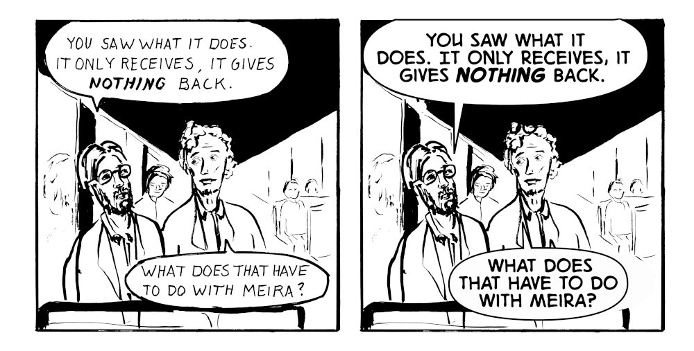

Letter #6
June 2026
In my last letter I talked about a comic manuscript I had sitting in a drawer, The Black Void. I even questioned if I would continue to create comics in the future.
Then I found this call for anthology submissions with a matching theme ("Void") and decided to make the comic. There was only about a month to deadline so I needed to find a way to work faster than I was able to with Little Eagle Down.
I cut the manuscript down to eight pages, went from rough pencil-sketches directly to ink, picked angles easier to draw, included fewer characters, and drew less detail in the panel backgrounds.
The comic, now renamed to The Seed of Light, was completed in time but not accepted for the anthology. But it still gave me renewed energy because I had found a path to creating comics with more reasonable effort.
So for the next one, I know that six to twelve pages is absolutely doable. Sure, the format is too thin for any intricate story arcs or character development. But it's enough to convey a certain feeling or atmosphere, like in a poem or song lyrics.
To make it easier for the reader I'll use watercolor and digital lettering. Color helps the reader interpret what is drawn. Digital lettering is more legible and a lot easier to edit over time. A minus is that it can look like it's floating on top of the art. Handlettering is beautiful and legible at the same time as long as it's consistent. I also like how handlettering makes each page a complete artwork that exists in the real world. But my lettering is still too inconsistent and I have a feeling it keeps breaking reader immersion.

I am still left on the painting plateau I talked about in the last letter. Much of the equipment is packed in a box somewhere since we are in the process of selling our house.
When it comes to music I just finalized Music Theory I. This summer and autumn I'll take follow-up courses. Music theory is actually quite far from the other practice areas of the practice. It feels closer to my engineering background and sometimes the logic context becomes almost relaxing.
It's surprising how different each practice area is to work with. Compare comics to writing for example: The comics process is varied and has many different phases and steps. Scripting, thumbnailing, layout, pencilling, inking, lettering and so on. It deals with physical tools like paper, brushes and colors. Breaks occur naturally during the work.
Writing on the other hand is like entering a fever dream. I get into a flow and basically forget eating and sleeping until I come out on the other side.
Now I look forward to picking up the short story again. The project name is "Trädgårdsmästaren" (The Gardener) where a main theme is the nature of time.